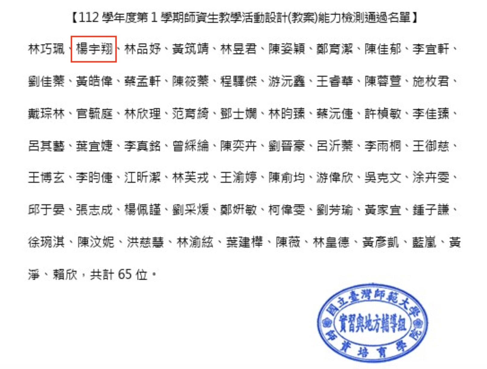

I joined Geographical Information Science Lab in the Department of Geography in National Taiwan University. My academic supervisor is Professor Tzai-Hung Wen, Ph.D.
本教案名稱為「地圖上的安全之旅:防災教育與GIS—防災教育議題融入地理資訊系統 教育探究與實作」，此教案遵循108課綱素養導向的課程設計方向，帶領學生利用地理資 訊系統(Geographical Information System, GIS)作為工具進行探究與實作，結合防災教育 議題融入與社會科領域地理科的學習內容進行設計。
在議題選定方面，臺灣因為位於環太平洋火山地震帶上，受菲律賓海板塊與歐亞板塊的 擠壓好發地震，在山地比例高且坡度較陡峭、濕熱的環境風化物質多的環境下，自然災害 的威脅也是全世界之冠(教育部防災教育資訊網，2023)。臺灣管理地震災害的部門為行 政院交通部中央氣象署，據監測數據，台灣每年約有2萬多至4萬次地震，其中有感地震有 7百至2千次。根據中央氣象局2020年啟用的地震分級新制，震度分為0-7級，總共有8個， 越高級數震度越大，0級為無感地震，1級開始為有感地震，5級以上為強震，7級為烈震， 可能引發房屋倒塌、山崩地裂的災害，導致人民生命與財產的損失。儘管無法透過現代科 學技術避免地震的發生，但可以訓練人學生以及人民，當地震來臨時，應該如何迅速應對 以及應對前須如何事前規劃，降低災害損失。
因應臺灣為多地震災害之島，中華民國教育部從2019年開始，推動結合防災科技資源與 創新研發的防災教育，期待臺灣的學生能「讓防災成為一種生活態度」，在認知、情意、 技能三方面均對於防災有基礎到應用的素養。本教案延續教育部的防災教育與環境教育的 精神，期待透過GIS技術的講述，帶領學生去思考，生活在臺灣這一座美麗但有潛在自然 災害襲擊的美麗島嶼上，地理技術(GIS)能夠翻為什麼樣的角色，這個技術除了「地理」這個學科，是不是可能可以用在更廣泛的專業領域當中。
此課程可能是學生接觸的GIS實作的「入門」課，授課教師須理解，學生課本知識到實 作成品的能力落差，可以轉化為Vygotsky(1978)提出的近側發展區間 (zone of proximal development, ZPD)，教師應該提供操作講義，步驟化的示範講解，搭起Wood、Bruner 和 Ross(1976)的鷹架(scaffolding)，讓學生能從實作中掌握108課綱的地理技能與素養，並且 從作品當中活得成就感。此課程作為入門課程，期待學生透過標準的流程步驟，熟悉GIS 實務與課本理論的結合，也培養他們對於自己產製成品的詮釋表達能力，以及對於防災與 環境的知識與素養。
2023 National Taiwan Normal University teaching activity design (lesson plan) ability test for intern teachers,A safe journey on the map: Disaster prevention education and GIS—Integrating disaster prevention education topics into geographic information system education research and implementation, YANG YU HSIANG

I joined Geographical Information Science Lab in the Department of Geography in National Taiwan University. My academic supervisor is Professor Tzai-Hung Wen, Ph.D.
Any cooperation or suggestion is welcome to me. E-mail is on school system. Phonenumer and the Address is Geography Department of National Taiwan University
Since 7,August 2019 (Wed)